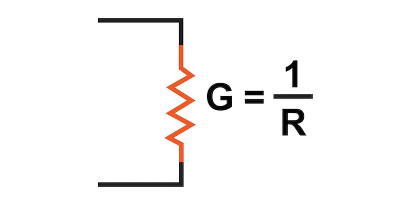
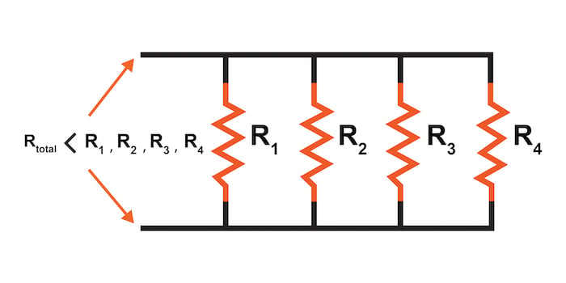
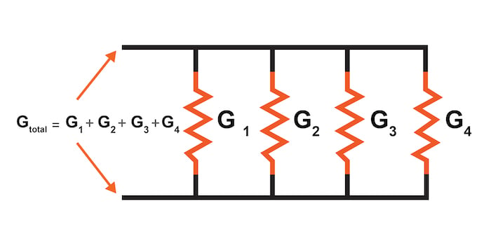

Conductance measures how easy it is for electric current to flow and is the inverse of resistance. Conductance is symbolized by the letter “G” and is measured in units of siemens or mhos.
The concept and measurement units of resistance are most often used when describing the relationship of current flow to voltage through Ohm’s Law. However, it is sometimes helpful to express the ability of a material to conduct current rather than its opposition to that current.
This ability to conduct current, called “conductance,” will be described in detail in this article.
Resistance is defined as the measure of friction a component presents to the flow of current through it. Symbolized by the capital letter “R,” resistance is measured in the unit of “ohm,” which is represented by the Greek capital letter omega, Ω.
With that in mind, we can also think of this electrical property in terms of its inverse—how easy it is for the current to flow through a component rather than how difficult.
If resistance is the word we use to symbolize the measure of how difficult it is for the current to flow, then a good word to express how easy it is for the current to flow would be conductance. Mathematically, conductance is the reciprocal, or inverse, of resistance:
$$Conductance \space \text{(S)}= \frac{1}{Resistance \space (\Omega)}$$
The greater the resistance, the less the conductance—and vice versa. This should make intuitive sense because resistance and conductance are opposite ways to denote the same essential electrical property.
If two components’ resistances are compared, and it is found that component “A” has one-half the resistance of component “B,” then we could alternatively express this relationship by saying that component “A” is twice as conductive as component “B.” If component “A” has one-third the resistance of component “B,” then we could say it is three times more conductive than component “B,” and so on.
Carrying this idea further, a symbol and unit were created to represent conductance. The symbol is the capital letter “G,” and the unit is the mho, which is “ohm” spelled backward (and you didn’t think electronics engineers had any sense of humor!).
Despite its appropriateness, the unit of the mho was replaced in later years by the unit of Siemens (abbreviated by the capital letter “S”). This decision to change unit names is reminiscent of the change from the temperature unit of degrees Centigrade to degrees Celsius; or the change from the unit of frequency c.p.s. (cycles per second) to Hertz. If you’re looking for a pattern here, Siemens, Celsius, and Hertz are all surnames of famous scientists, the names of which, sadly, tell us less about the nature of the units than the units’ original designations.
As a footnote, the unit of Siemens is never expressed without the last letter “s.” In other words, there is no such thing as a unit of “siemen” as there is in the case of the “ohm” or the “mho.” The reason for this is the proper spelling of the respective scientists’ surnames.
The unit for electrical resistance was named after someone named “Ohm,” whereas the unit for electrical conductance was named after someone named “Siemens”, therefore it would be improper to “singularize” the latter unit as its final “s” does not denote plurality.
In the next two sections, we’ll cover the total resistance and conductance in parallel circuits.
Examining the parallel resistance circuit of Figure 1, we should be able to see that multiple paths (branches) for current reduce the total resistance for the whole circuit.

The current can flow more easily through the whole network of multiple branches than through any one of those branch resistances alone. In terms of resistance, additional branches result in a reduced total equivalent resistance because the current has less opposition.
In terms of conductance, however, additional branches result in greater total conductance because the current flow is increased. Total parallel conductance is greater than any of the individual branch conductances because parallel resistors conduct better together than they would separately (Figure 2)

To be more precise, the total conductance in a parallel circuit is equal to the sum of the individual conductances:
$$G_{total} = G_1 + G_2 + G_3 + G_4$$
If we know that conductance is nothing more than the mathematical reciprocal (1/x) of resistance, we can translate each term of the total conductance formula into resistance by substituting the reciprocal of each respective conductance:
$$\frac{1}{R_{total}} = \frac{1}{R_1} + \frac{1}{R_2} + \frac{1}{R_3} + \frac{1}{R_4}$$
Solving the above equation for total resistance (instead of the reciprocal of total resistance), we can invert (reciprocate) both sides of the equation:
$$R_{total} = \frac{1}{\frac{1}{R_1} + \frac{1}{R_2} + \frac{1}{R_3} + \frac{1}{R_4}}$$
So, we arrive at our cryptic parallel equivalent resistance formula at last! Conductance (G) is seldom used as a practical measurement, so the formula above is common in the analysis of parallel circuits.